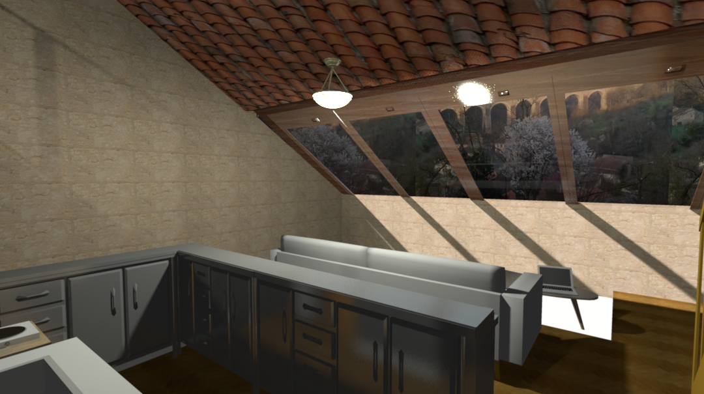

solidité: notre couverture doit supporter les rigueurs du climat
luminosité: les combles doivent recevoir un maximum de lumière
respiration: par beau temps, la fenêtre doit s'ouvrir sur au moins la moitié de sa largeur

vidéo : Nous avons opté pour une fenêtre de toit sous la forme de quatre vantaux dont deux mobiles.
Plan de la toiture avec la verrière sur sa partie ouest
Les cotes sont données en cm avec la toiture posée à plat, et non pas vue de haut (vue de haut, la toiture a la même forme que la maison soit un rectangle d'environ 6m X 15m).
Nous souhaitons donc une verrière composée de quatre vantaux d'environ 1,5m X 1m chacun, dont au moins deux sont coulissants.